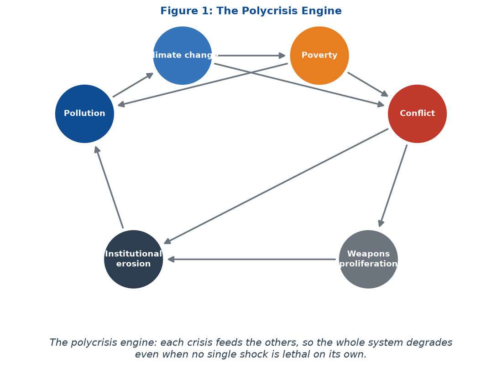
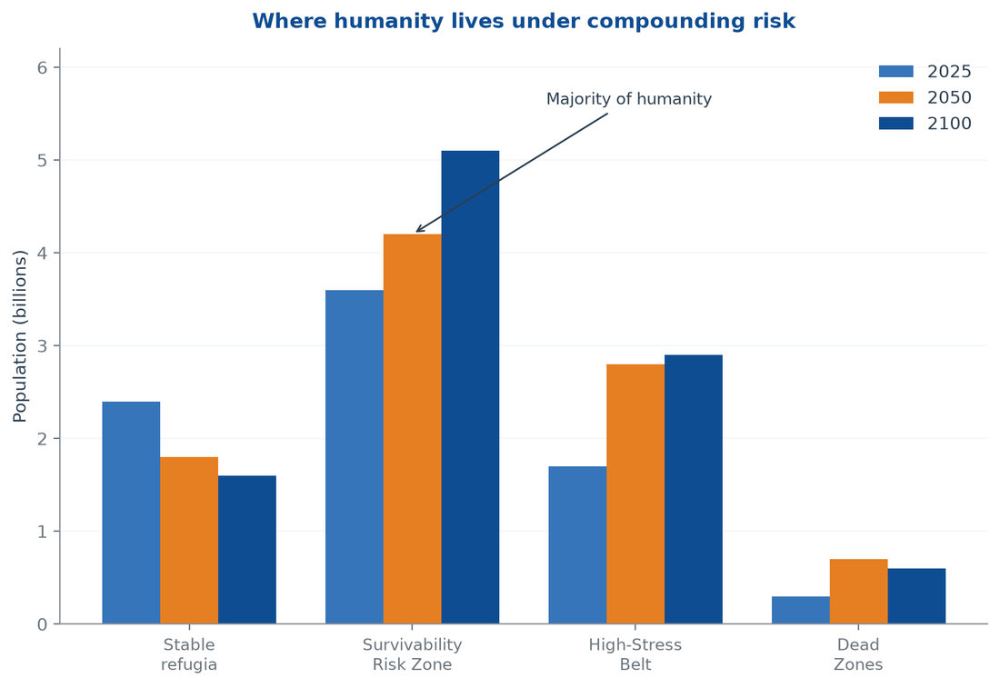
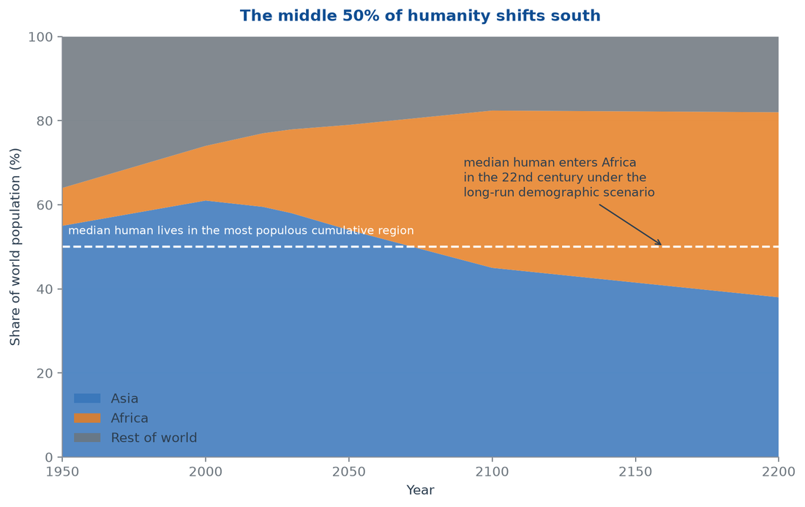
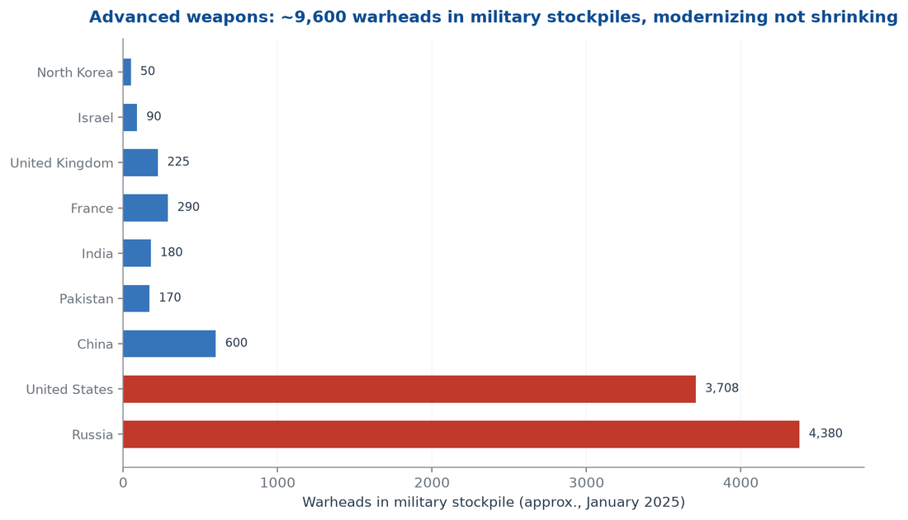
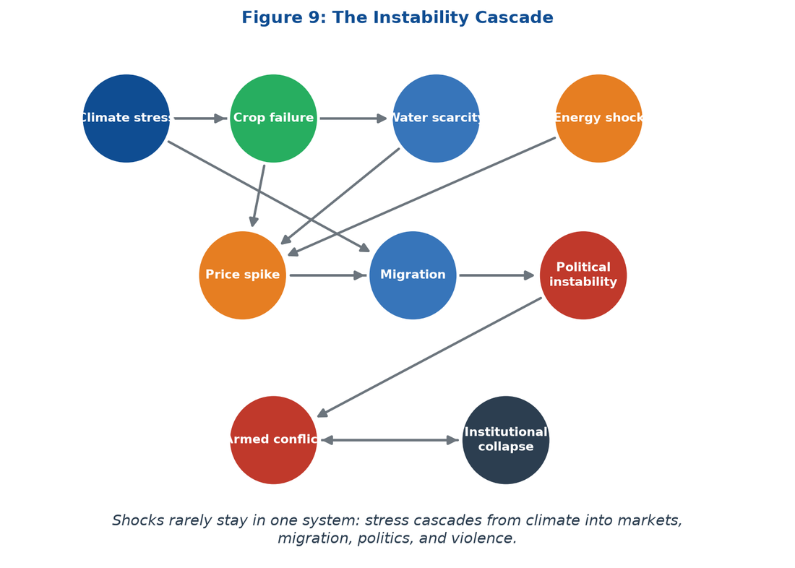
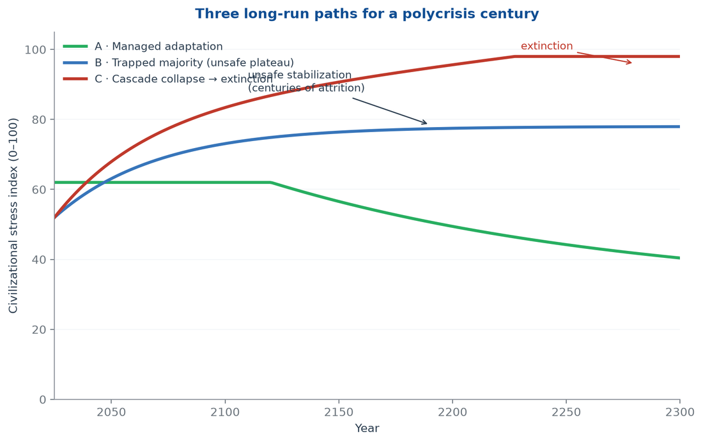

Executive Summary
The apocalypse is not a blast. It is a re-sorting of the species into survivability risk regions, a stabilization at unsafe levels, and a long decay — unless the loops are broken now.
The apocalypse is a plateau, not a blast
A majority of humanity is being re-sorted into survivability risk regions — habitable but harmful — where conditions stabilise at unsafe levels and then decay over centuries, not in one event.
Demography moves the median human south
Africa grows from 1.5 billion to 3.8 billion people by 2100 while Europe contracts; the middle of the human distribution enters Africa in the 22nd century.
Collapse is a governance failure, not destiny
Haiti shows the mechanism — extractive legacy, hollow institutions, criminal governance, a trapped population. The Dominican comparison refutes any demographic-determinist reading.
Weapons and turmoil convert slow decline into fast collapse
Roughly 9,600 nuclear warheads sit in military stockpiles while autonomy diffuses downward; price, migration and violence cascades run through every risk region.
Humanity is entering a polycrisis apocalypse. The word deserves its original sense: an unveiling, not an explosion. The evidence no longer supports the two stories that dominate public debate — sudden extinction by nuclear war or pandemic, and smooth adaptation to a warmer, busier planet. The more probable path is slower and worse than either story admits. A majority of the human population is being re-sorted into survivability risk regions: places that remain habitable in name but where pollution, climate stress, poverty, and conflict compound until life stabilizes at unsafe levels. Once trapped there, the population does not recover. It persists — for centuries, possibly millennia — in prolonged, grinding attrition, until accumulated failures terminate the species. That is the pessimistic branch this report documents, tests, and then refuses to treat as inevitable.
The inputs are already measurable. Humanity has breached six of nine planetary boundaries, including climate change and novel chemical entities (Richardson et al., 2023). Pollution kills roughly 9 million people a year (Fuller et al., 2022). Atmospheric carbon dioxide passed 425 parts per million and the planet runs above 1.2 degrees Celsius of warming (NOAA, 2025). Roughly 700 million people live in extreme poverty and nearly half the world survives on less than $6.85 a day (World Bank, 2024). H Heuristics survivability modeling places 4.2 billion people inside the Survivability Risk Zone by 2050, with another 2.8 billion in the High-Stress Belt. These are not separate problems. They are one entangled system, and the entanglement is the apocalypse (Lawrence et al., 2024).
The demographic engine multiplies the exposure. Africa grows from 1.5 billion people in 2024 to roughly 3.8 billion by 2100, while Europe contracts from 745 million toward 590 million (UN WPP, 2024). By the end of this century more than eight in ten people will live in Asia or Africa, and Africa will hold about 37 percent of the species. The median human being — the middle of the global distribution — shifts south with it. The consequence is not the crude claim that the average human becomes “less evolved.” Evolution has no ladder, and populations do not sit on one. The measurable consequence is harsher: the median human will live inside the risk regions that already concentrate the world’s air pollution, water stress, food insecurity, and state fragility. The civilization-wide problem is the mismatch between where humanity will live and where safe, wealthy, well-governed life is currently possible.
Haiti shows what that mismatch produces. A state with a proud founding history now suffers roughly 90 percent gang control of its capital, more than 5,900 killings in 2025, and 1.4 million internally displaced people (UN News, 2025). Haiti is a preview, not a prophecy: the mechanisms that collapsed it — institutional erosion, criminal governance, environmental degradation, and a trapped population — are the same mechanisms risk regions run on. Advanced weapons raise the stakes. Nuclear arsenals are modernizing rather than shrinking, with about 9,600 warheads in military stockpiles and roughly 3,900 deployed (SIPRI, 2025). Autonomous and AI-enabled weapons lower the cost of organized violence precisely where institutions are weakest.
The chapters build the case in sequence. Chapter 1 defines the slow apocalypse and Chapter 2 maps the survivability risk regions where the majority will live. Chapters 3 through 5 establish the degradation arc, the demographic shift, and the middle-50 hypothesis. Chapters 6 through 8 test the mechanism against Haiti, advanced weapons, and societal turmoil. Chapters 9 and 10 compare the collapse trajectory with its counter-forces, and Chapter 11 closes with the binding term. A reader in a hurry should read this summary, the two scenario figures in Chapters 3 and 9, and the final chapter.
The report concludes with a specific claim, not a restatement. The polycrisis apocalypse is a demographic and environmental re-sorting that traps the majority of the species inside survivability risk regions, stabilizes it at unsafe levels, and only then decays toward extinction. The binding term follows. Judge every long-run policy by one test: does it move the median human out of the risk region, or merely manage their suffering inside it? Suffering management buys time. Moving the median human buys survival.
1. The Polycrisis Apocalypse Frame
The slow apocalypse is the probable branch — and it hides in plain sight.
What “apocalypse” means in this report
Apocalypse began as a Greek word for unveiling — a disclosure of what had been hidden. This report uses the word in that older sense, and then sharpens it. The hidden thing now being unveiled is not a single catastrophe but a compounding one: a re-sorting of the human population into zones of chronic harm, followed by stabilization at unsafe levels, followed by a long decay. The popular imagination still runs on the sudden apocalypse — the nuclear exchange, the engineered pandemic, the asteroid. Those scenarios are real and must be priced. But the sudden apocalypse kills fast and visibly. The polycrisis apocalypse kills slowly, over centuries, by attrition, and it is already underway.
The distinction matters for policy. A civilization preparing for a sudden apocalypse builds shelters, treaties, and early-warning systems. A civilization facing a slow apocalypse must build something harder: the economic, demographic, and institutional capacity to move the median human out of harm’s path before the harm becomes permanent. The two preparations are not substitutes. Treating the slow apocalypse as a distant problem while optimizing for sudden catastrophe is how a species walks into extinction one compromised harvest, one collapsed state, and one lost generation at a time.
The polycrisis is a causal system, not a list
A global polycrisis is the causal entanglement of crises in multiple global systems in ways that significantly degrade humanity’s prospects (Lawrence et al., 2024). The definition excludes coincidence. The world does not face a random pile of emergencies. It faces emergencies that feed each other. Pollution weakens lungs and crops. Warming intensifies both. Poverty forces households toward cheap, dirty energy, which deepens pollution and warming. Conflict destroys the infrastructure that might have adapted to all three, and weapons proliferation makes conflict cheaper to sustain. The combined harm exceeds what each crisis would produce alone, and it concentrates in the places least able to absorb it.
The causal machinery has three standard forms (Lawrence et al., 2024). Common stresses weaken several systems at once — a planetary energy imbalance of roughly 1.36 watts per square meter now drives heat, flood, crop failure, migration, and conflict simultaneously (Hansen et al., 2023). Domino effects let one system’s crisis trigger another’s — a war in one region becomes a food-price shock in forty. Inter-systemic feedbacks make two crises amplify each other in a loop — poverty and pollution chase each other upward for generations. Figure 1 renders the engine this report will return to throughout.
Figure 1 — The polycrisis engine. Each crisis feeds the others, so the system degrades even when no single shock is lethal on its own.

The polycrisis engine. Each crisis feeds the others, so the system degrades even when no single shock is lethal on its own..
The planetary boundary evidence frames the stress field. Six of nine boundaries are breached: climate change, biosphere integrity, novel entities, land-system change, freshwater change, and biogeochemical flows (Richardson et al., 2023). The breaching of the novel-entities boundary is the pollution dimension of the apocalypse: more than 350,000 chemicals circulate in commerce, most never tested for cumulative human harm. These boundaries are not a checklist of separate failures. They are the shared biophysical load under which every human institution now operates.
Why the slow apocalypse is the probable branch
Three features make the slow apocalypse the most probable branch, and the most dangerous. First, scale. The majority of humanity — not a fringe population — is projected to live inside survivability risk regions by mid-century. When a majority is exposed, the problem stops being a humanitarian file and becomes the default condition of the species. Second, duration. A trapped population does not suffer for a season. It suffers across generations, because the same poverty that blocks escape also blocks the investment that would make escape unnecessary. Third, irreversibility. States that collapse under compounding stress do not reassemble quickly. Haiti’s collapse has been running for decades and accelerating for years; Rome’s ran for centuries. Once the institutional fabric of a risk region fails, the region becomes a poverty trap with a flag.
The pessimistic branch this report examines therefore runs as follows. The majority of humanity moves into survivability risk regions. Conditions there stabilize at unsafe levels — stable enough to keep billions alive, unsafe enough to keep them sick, poor, and immobile. Over centuries, the accumulated damage to institutions, human capital, and the biosphere compounds. Extinction arrives not as a blast but as the terminal stage of a long decline, centuries or millennia after the process became visible.
Why the slow apocalypse is hard to see
The slow apocalypse hides in plain sight for three reasons. Baselines shift: each generation takes its own degraded environment as normal, so a child who has never breathed clean air experiences pollution not as a crisis but as weather. Expectations adapt: households that lose a week of work to heat or a month of income to illness absorb the loss and lower their plans, and the lowered plans show up in no headline. Statistics smooth: annual aggregates conceal the compounding of small losses, because a one-percent annual decline in state capacity or household health is invisible in a quarterly report and catastrophic across a century. The result is that the most dangerous trajectory is also the least legible one. A civilization can be deep into the apocalypse before any single indicator forces recognition.
Method and honesty constraint
This report is scenario analysis, not prophecy. It builds on three data pillars: the H Heuristics survivability model of habitability tiers and risk-region populations; the United Nations World Population Prospects 2024 demographic projections (UN WPP, 2024); and a structured case study of Haiti’s collapse, the closest available real-world preview of a trapped-majority state failure. It tests the author’s scenario hypotheses — including the claim that diaspora dominance leads to collapse, and the claim that the average human becomes “less developed by tens of thousands of years” — against evidence rather than assuming them. Where a hypothesis fails, the report says so and replaces it with the measurable version of the risk. The reader gets the strongest version of the apocalypse case that survives contact with the data, which is the only version worth planning against.
The claim. Humanity is not heading for a sudden apocalypse but for a centuries-long polycrisis apocalypse — a demographic and environmental re-sorting that traps the majority of the species inside survivability risk regions, stabilizes it at unsafe levels, and only then decays toward extinction — unless the compounding loops are broken now.
2. Survivability Risk Regions: The Majority's Destination
Habitable but harmful: the four tiers and the six vectors that trap the majority.
Habitable, but harmful
A survivability risk region is a place where life remains technically possible but where compounding environmental, economic, and institutional failures make existence harder, poorer, sicker, and more punishing each year. The term names the gap between two thresholds. Below the lower threshold, a place is uninhabitable: wet-bulb temperatures above human physiology, water gone entirely, soil dead. Above the upper threshold, a place is safe: institutions hold, infrastructure works, and households can absorb shocks. The risk region sits between the two — habitable enough to prevent evacuation, harmful enough to destroy health, wealth, and mobility at scale.
The distinction reframes the climate and development debate. Policy obsesses over the uninhabitable — the wet-bulb limit, the desert frontier, the submerged coast. The obsession is wrong in proportion. For every person living in a zone of total biophysical collapse, tens of millions live trapped in the risk region, absorbing damage that never crosses the lethal threshold but never stops either. The dominant human experience of the twenty-first century will be chronic attrition inside that zone, not cinematic flight from it.
Four tiers, and where the majority sits
The H Heuristics survivability model distributes the global population across four habitability tiers. Stable Refugia hold people behind intact institutions and deep capital: wealthy, temperate, well-governed places that will absorb warming at tolerable cost. The Survivability Risk Zone holds people under sub-lethal heat, toxic air, and rationed water. The High-Stress Belt holds people facing frequent super-disasters and seasonal crop collapse. True Dead Zones hold people past the wet-bulb lethality limit. Table 1 summarizes the tiers and their 2050 populations; Figure 2 shows the distribution over time.
Table 1 — Habitability tiers and their 2050 populations
| Tier | Definition | 2050 population (H Heuristics model) | Hazard signature |
|---|---|---|---|
| Stable Refugia | Intact institutions, deep capital, tolerable warming | 1.8 billion | Moderate heat; insured losses; adaptation affordable |
| Survivability Risk Zone | Habitable but harmful; compounding stressors | 4.2 billion | Chronic heat, PM2.5, rationed water, hidden malnutrition |
| High-Stress Belt | Frequent super-disasters; seasonal crop collapse | 2.8 billion | Heatwaves, floods, food-price spikes, displacement |
| True Dead Zones | Past wet-bulb lethality or resource exhaustion | 0.7 billion | Mass-casualty heat, water failure, abandonment |
Figure 2 — Habitability tiers, 2025–2100. The Survivability Risk Zone becomes the modal human environment by mid-century.

Habitability tiers, 2025–2100. The Survivability Risk Zone becomes the modal human environment by mid-century..
The middle two tiers carry the story. Roughly 7 billion of a 9.5-billion-person 2050 population — about three in four people — will live somewhere between chronic harm and frequent catastrophe. The risk region is not a margin of the map. It is the center of the human distribution.
The six vectors of chronic attrition
Risk does not arrive as a single blow. It compounds through six vectors that converge on the same household at the same time. None crosses the lethal threshold alone. Together they behave multiplicatively.
Sub-lethal thermal strain comes first. Physiology fails far earlier than the 35-degree wet-bulb limit. Between 28 and 30 degrees wet-bulb, a body performing outdoor labor cannot shed metabolic heat through sweat, and tropical economies already lose more than 400 billion outdoor labor hours each year. Chronic air toxicity follows. In the Indo-Gangetic Plain, the Nile Delta, the North China Plain, and the Niger Delta, annual PM2.5 averages 60 to 140 micrograms per cubic meter — several times the World Health Organization guideline — and spikes past 400 during burning season (WHO, 2024). Hydrological rationing arrives as the weaponization of access: groundwater tables fall one to three meters per year across the Indus, Ganges, and North China basins, and informal tanker cartels resell water at ten to thirty times the municipal tariff. Hidden caloric deficits close the food channel: above 550 parts per million of carbon dioxide, staple crops build carbohydrate at the expense of protein, zinc, and iron. Low-intensity insecurity erodes the state’s monopoly on force, as gangs and militias take over distribution networks. Grid strain completes the trap: rolling blackouts during 45-degree heatwaves leave sheet-metal homes at 34 to 38 degrees through the night, so bodies cannot recover core temperature during sleep.
These six vectors explain why the risk region is a trap rather than a waypoint. A household could absorb one vector — a bad heat year, a polluted month, a water tariff. It cannot absorb six vectors compounding for a decade, because each vector converts into the others: heat cuts labor income, lost income buys dirtier fuel, dirty fuel worsens air, illness consumes savings, savings depletion blocks migration. The region does not collapse around the household. It tightens around it.
The geography of the risk zone
The risk zone is not evenly distributed. It concentrates in a belt of river basins, deltas, and drylands that already carry the world’s densest poor populations: the Indo-Gangetic Plain, the North China Plain, the Nile Delta, the Niger Delta, the Sahel, the Horn of Africa, the Middle East’s water-stressed arc, and the informal megacities of South and Southeast Asia and Latin America. These regions share a signature: fertile enough to have attracted hundreds of millions of people, hot enough that warming now pushes whole seasons past physiological comfort, and poor enough that adaptation remains out of reach. They are precisely the regions where fertility remains highest and where the UN projects the bulk of this century’s population growth. The risk zone and the growth zone are, to a first approximation, the same map.
The Indo-Gangetic Plain alone holds roughly 600 million people under annual PM2.5 levels several times the WHO guideline. The Sahel adds some of the world’s fastest population growth onto a base already facing desertification and jihadist insurgency. The Nile Delta couples 100 million Egyptians to a river system stressed by upstream dams and rising seas. Each region is a laboratory of the same experiment: dense, poor, hot, and growing. The experiments are running in parallel, which is why the results will correlate.
Why the majority moves in
The majority moves into risk regions through three mechanisms. Natural increase is the largest: the highest-fertility populations live in the highest-risk latitudes, so the species grows fastest precisely where hazard is densest. Convergence failure is the second: poor regions are not catching up to rich ones fast enough to buy safety, and climate damage erodes the gains they do make. Trapped immobility is the third: households that would migrate cannot — migration requires capital, documents, and a destination willing to receive them, and all three are scarce. The result is a demographic gravity well. The risk region imports no one; it grows its own population in place.
Stabilization at unsafe levels
The most dangerous property of the risk region is that it is stable. Nothing about chronic attrition forces a phase transition. States can lose control of provinces and keep collecting customs at the port. Households can lose labor capacity and keep farming. Regions can lose a generation of cognitive development to malnutrition and keep functioning at a lower level. The system settles into an equilibrium — unsafe, but stable — because every component degrades at a rate slow enough to avoid collapse and fast enough to block recovery. That is the stabilization this report’s title names: not safety, but the persistence of harm. A majority stabilized at unsafe levels is a civilization running on degraded hardware, and degraded hardware fails eventually.
3. The Long Degradation Arc: Centuries to Extinction
Collapse runs for centuries. The length of the arc measures the suffering, not the warning.
Attrition is a process, not an event
The pessimistic branch of the polycrisis is not a catastrophe with a date. It is a degradation arc with a slope. The slope matters more than any single shock, because a shallow slope can run for centuries before anyone treats it as an emergency, and by then the accumulated damage has already decided the outcome. A civilization that loses one percent of its human capital, institutional capacity, and biophysical margin per generation does not look like a civilization in collapse. It looks like a civilization getting slightly poorer, slightly sicker, and slightly more violent — indefinitely. That is the camouflage of the slow apocalypse.
The mechanism is compounding. Each generation in the risk region starts with less than the previous one: less lung function from childhood air pollution, less cognitive development from childhood malnutrition, less savings because the previous generation spent its assets on survival, less state capacity because the state spent its budget on emergencies. The losses multiply rather than add. A child born into the risk region in 2100 will inherit a smaller endowment than a child born in 2050, even if the headline indicators — GDP per capita, life expectancy, caloric intake — appear stable. The stabilization at unsafe levels documented in the previous chapter is therefore a stabilization of surface conditions over a deepening substrate of damage. The surface holds while the foundation erodes.
How long collapse takes: the historical record
History calibrates the timescale. Civilizational collapses are rarely sudden. The western Roman state took roughly three centuries to move from peak administrative capacity to the deposition of its last western emperor — and its institutional afterlife ran for centuries more. The Classic Maya lowlands declined across roughly two centuries of drought, warfare, and abandonment. Easter Island’s ecological unraveling ran across several centuries of deforestation and social competition. Each case differs, but the shared lesson is blunt: complex societies can decline for longer than they flourished, and the people inside the decline experience it as normal life with rising background misery, not as an apocalypse with a name.
The polycrisis adds a variable those earlier collapses did not have: planetary scale. Rome could fall while China flourished. The Maya decline was regional. The current risk region is continental in extent and global in interconnection, which means the decline cannot be quarantined. When the majority of humanity lives inside the risk region, there is no outside civilization to absorb the refugees, transmit the technology, or preserve the records. The fall, when it comes, is the fall of the whole.
One caution follows from the historical record. Collapse timescales are not a comfort. A three-century decline is not three centuries of warning followed by a catastrophe; it is three centuries of catastrophe, distributed across generations who each experience their slice as the normal condition of life. The length of the arc measures the size of the suffering, not the size of the opportunity to avert it. The opportunity to avert it is compressed into the early decades, when the slope is still shallow enough to reverse.
What a century of attrition does to a civilization
Attrition works on the substrate of civilization, not only on its surface. Human capital decays first: children who grow up breathing hazardous air and eating nutrient-depleted staples reach adulthood with reduced lung function and cognitive capacity, and the loss compounds across generations because today’s stunted children are tomorrow’s parents and teachers. Institutional capital decays second: states that spend their budgets on emergencies stop maintaining courts, schools, and cadastres, and the unmaintained institutions lose legitimacy, which shrinks the tax base, which starves maintenance further. Cultural capital decays third: societies that must devote all their energy to survival lose the surplus that funds science, art, and the transmission of knowledge, and the loss is invisible until a generation reaches for a capability and finds it gone. These are not dramatic losses. They are quiet ones, and quiet losses are the ones a civilization never notices until it can no longer recover.
The extinction pathway
Extinction is the terminal branch, not the base case. The report states the distinction plainly: human extinction from the polycrisis is possible, not certain, and it operates through mechanisms slower than the familiar extinction scenarios. The first mechanism is fertility collapse. Populations under chronic stress — and especially populations whose women face economic precarity, health burdens, and eroded institutions — eventually fall below replacement, and a species that stops replacing itself is on a countdown. The second is cascading state failure. Enough simultaneous Haiti-type collapses would fragment the global systems — food, finance, trade, disease control — that currently keep the risk region’s population alive at all. The third is the weapons term. A multi-century decline is a long window in which advanced weapons diffuse to desperate actors, and a civilization that cannot govern its risk regions cannot indefinitely govern its arsenals either.
Figure 3 plots the shape of the pessimistic branch: the share of humanity in survivability risk regions rises, stabilizes at unsafe levels, and — in the worsening scenario — climbs again as the stabilizers fail. The extinction pathway is the upper tail of that fan.
Figure 3 — Share of humanity in survivability risk regions, 2025–2300, under three scenarios. The pessimistic branch stabilizes at unsafe levels, then worsens.
Share of humanity in survivability risk regions, 2025–2300, under three scenarios. The pessimistic branch stabilizes at unsafe levels, then worsens..
Prolonged suffering as the central moral fact
The report refuses to let extinction dominate the analysis, because extinction is the wrong unit of moral accounting for the next several centuries. The right unit is the prolonged, excruciating suffering of the generations in between — the billions who will live entire lives inside the plateau of Figure 3. They will not be the last humans. They will be the humans who carry the species across the plateau, sick, poor, and trapped, while the institutions that might have helped them erode. The apocalypse, on this branch, is not the end of the story. It is the story: centuries of avoidable misery, repeated across generations, before the end ever arrives.
That reframing changes the policy problem. A civilization that only fears extinction will gamble, because extinction feels distant and improbable in any given decade. A civilization that fears the plateau will act, because the plateau is already visible in the data of the present. The report therefore treats the multi-century suffering of the trapped majority as the primary catastrophe to prevent. Extinction is the residual risk that follows if prevention fails.
4. Demographic Tectonics: Africa's Ascent, the West's Decline
Africa adds 2.3 billion people this century while Europe contracts. The centre of gravity shifts south.
The African century
Demography is the slowest and most certain force in this report. The United Nations World Population Prospects 2024 medium variant projects Africa’s population to grow from about 1.51 billion in 2024 to roughly 2.5 billion by 2050 and 3.8 billion by 2100 (UN WPP, 2024). Africa will contribute more than the entire net increase of the human population this century — the rest of the world, in aggregate, will add nothing on net by the 2080s and then begin shrinking. By 2100 Africa will hold about 37 percent of humanity, up from 18 percent today. Asia falls from 59 percent to about 45 percent; Europe falls from 9 percent toward 6 percent. More than eight in ten people will live in Asia or Africa (Our World in Data, 2024).
The drivers are structural, not cyclical. Africa’s total fertility rate is declining — from above 5 children per woman in 2000 toward roughly 2.9 by 2050 — but the continent’s age structure guarantees growth for generations: a young population entering childbearing years keeps births high even as rates fall. The same structure runs in reverse in Europe. Europe’s total fertility rate sits near 1.5, below replacement for half a century, and its median age is already past 42. A population this old shrinks without net immigration. The UN’s medium variant projects Europe to fall from 745 million in 2024 to about 590 million by 2100 — a loss of roughly 150 million people while Africa adds 2.3 billion. Figures 4 and 5 render the shift; Table 2 records the numbers.
Figure 4 — Africa's population rises to 3.8 billion by 2100 while Europe contracts toward 590 million. UN WPP 2024 medium variant.
Africa's population rises to 3.8 billion by 2100 while Europe contracts toward 590 million. UN WPP 2024 medium variant..
Figure 5 — Regional shares of world population, 2024 versus 2100. Africa nearly doubles its share; Asia and Europe decline.
Regional shares of world population, 2024 versus 2100. Africa nearly doubles its share; Asia and Europe decline..
Table 2 — Regional demographic projections, 2024–2100
| Region | 2024 population | 2050 population | 2100 population | Share 2024 | Share 2100 |
|---|---|---|---|---|---|
| Africa | 1.51 billion | 2.5 billion | 3.81 billion | 18.4% | 37.4% |
| Asia | 4.8 billion | 5.2 billion | 4.6 billion | 59.2% | 45.0% |
| Europe | 745 million | 700 million | 590 million | 9.1% | 5.8% |
| Latin America & Caribbean | 670 million | 730 million | 650 million | 8.3% | 6.4% |
| North America | 380 million | 420 million | 440 million | 4.7% | 4.3% |
| Oceania | 46 million | 57 million | 71 million | 0.6% | 0.7% |
The West’s decline and the politics of demographic panic
Western decline is real but easily misread. The measurable fact is contraction and aging: Europe’s working-age population shrinks while its pension-age population grows, and no plausible fertility recovery reverses the arithmetic before 2100. Immigration is the only current offset, and it has become the central political cleavage of every Western democracy. The user-facing hypothesis this report was asked to test — that immigration and ethnic blending drive European population decline — gets the causal direction backward. Decline drives immigration, not the reverse: aging economies import workers because their own populations no longer reproduce at replacement. Blending is a consequence of the demographic math, not its cause.
The deeper risk is not blending. It is fragility. A shrinking, aging electorate that consumes more than it produces will find its tax base, innovation pipeline, and military recruitment pool contracting together. If that contraction is met with nativist politics that reject the very migration that could cushion it, the West does not merely decline — it declines angry, insular, and distracted from the polycrisis. That is the scenario this report treats as the Western failure mode: not dissolution by blending, but paralysis by demographic panic while the risk regions grow.
The diaspora scenario
The flip side is the African diaspora. Africa’s growth does not stay in Africa. Migration, both intra-African and outward, will accelerate as risk-region conditions push and aging labor markets pull. The scenario Hunter Hughes develops in Africa Ascendant projects an African diaspora that becomes the world’s largest and youngest transnational population (H Heuristics, 2026). The report argues the diaspora will dominate global labor markets, remittance flows, and cultural production by late century.
That projection cuts both ways for this report’s apocalypse thesis. On one side, a diaspora transmits capital and skills back to origin countries — remittances already exceed foreign aid several times over, and they function as a private social safety net that no collapsing state can confiscate. On the other side, if the origin regions remain trapped in survivability risk, the diaspora becomes a population that exports its best-educated members while the median human stays behind. The diaspora scenario, in other words, can coexist with a trapped-majority scenario. The two are not rivals. They are the same demographic event seen from two ends.
The “evolutionary progression” hypothesis, tested
The report was asked to evaluate a stronger claim: that an African-dominated world lowers the average human’s “evolutionary progression by tens of thousands of years.” The claim must be rejected as stated, because it rests on a model of human evolution that biology does not support. Evolution has no ladder, and populations do not sit on rungs. Human genetic variation is recent, continuous, and overwhelmingly shared; there is no measure by which one population is “tens of thousands of years” behind another in evolutionary development. The framing is not merely impolite. It is analytically empty, and it would misdirect policy toward civilizational despair when the real lever is institutional.
The measurable version of the claim is serious and survives the data. What differs across populations is not evolutionary stage but exposure and endowment: whether a child is born into a risk region or a refugium determines air quality, nutrition, education, and state protection. That gap is real, widening in places, and measured in development decades rather than evolutionary millennia. The honest formulation of the author’s intuition is this: the average human of the coming centuries will inherit less of what makes life safe and productive — not because the population changed genetically, but because the median location of the species moved into the risk region. The rest of this report works with that measurable formulation, because it is the one that can be acted on.
5. The Middle-50% Hypothesis: The Average Human in 2200
The median human of 2200 is a child in a risk region — unless this century changes that.
Where the median human lives today
The median human being — the person at the exact middle of the global population distribution — lives today in Asia. The center of humanity has not moved for centuries, because Asia has held the majority of the world’s population for most of recorded history. That anchor is now shifting. The question this chapter asks is where the median human lives in 2200, and what it means that the answer is no longer Asia.
The mechanics are simple. The median human lives in the region that contains the 50th percentile of the population distribution. As Africa’s share of humanity climbs from 18 to 37 percent and Asia’s falls from 59 to 45 percent by 2100, the center of gravity slides south. Extend the UN’s medium-variant trajectory one century further — the standard practice in long-run demographic scenario work — and Africa’s share approaches the mid-40s while Asia’s falls toward the high 30s. The median human enters Africa somewhere in the twenty-second century. Figure 6 illustrates the shift.
Figure 6 — The median human's region over time. Under the long-run demographic scenario, the middle of the human distribution enters Africa in the 22nd century.

The median human's region over time. Under the long-run demographic scenario, the middle of the human distribution enters Africa in the 22nd century..
The middle 50, not the average
The report prefers “middle 50” to “average” for a precise reason. Averages hide distributions. The relevant unit for civilizational risk is not the statistical mean of human income or health but the central half of the population — the billions who are neither the global elite nor the most destitute. What happens to the middle 50 decides the species’ trajectory, because the middle 50 supplies the labor, the children, the soldiers, the consumers, and the voters of the future.
The middle-50 hypothesis states that the future median human will be born in a survivability risk region. The evidence already points that way. The highest-fertility countries are disproportionately concentrated in the same latitudes that carry the heaviest climate, pollution, and conflict burdens. The World Bank’s poverty map and the H Heuristics survivability map overlap almost perfectly. If current trajectories hold, the typical human of 2200 is not a wealthy professional in a temperate refugium. The typical human is a child born into a risk-region household — exposed to hazardous air, rationed water, insecure food, and a state too weak to guarantee any of the three. The middle 50 do not become trapped because they are African. They become trapped because the places where humanity is growing are the places humanity has failed to make safe.
The geography of the median
The median human’s location can be computed with some precision. Today the 50th percentile of the global population sits in South Asia — the dense band from Pakistan through India to Bangladesh. By 2050 it will have moved toward sub-Saharan Africa’s young populations and toward the urban coasts of Africa and Asia. The UN’s regional projections imply that Africa, Asia, and the rest of the world will each approach parity in the twenty-second century, with Africa holding the largest single share. The median human is therefore not an abstraction: it is a specific child, born in a specific risk-region city, around a specific year in the twenty-second century, into whatever institutions and energy systems this century decides to build. The middle-50 hypothesis is a way of forcing policy to see that child while there is still time to change the child’s circumstances.
“Tens of thousands of years”: a metric that misleads
The report was asked to consider the claim that this shift leaves the average human “less developed in evolutionary progression by tens of thousands of years.” The metric fails on two counts. First, as established in the previous chapter, evolutionary progression is not a quantity any population possesses in degrees. Second, even as a metaphor the number misleads, because it frames a development gap as a species regression. Development is not coded into populations; it is built by institutions, infrastructure, and education systems, and it can be built quickly where those are present. South Korea moved from war-devastated poverty to technological leadership inside two generations. No population requires tens of thousands of years to develop anything. The binding constraint is never genetic time. It is whether the risk region gets the institutions, energy, and capital to make its median child safe.
The honest version of the claim remains consequential. If the median human of 2200 is born into a risk region that has not developed the institutions and infrastructure to protect its population, then the median human will be poorer, sicker, and less educated than today’s median human — a genuine civilizational regression measured in development decades. That is not a prediction about African capacity. It is a prediction about what happens to any population, of any ancestry, left inside the risk region for a century without the tools to escape it. The apocalypse, on this reading, is a development failure at planetary scale, not a biological one.
What the middle 50 mean for civilization
The location of the median human determines where civilization’s center of gravity sits. It determines where the world’s consumers are, where its workers are, where its militaries recruit, and where its political power accretes. A civilization whose median member lives in a risk region is a civilization that must either develop the risk region or accept permanent immiseration as its default condition. The twenty-first century has not yet made that choice. The choices made now — about energy access, education, governance, and the transfer of clean technology — determine whether the median human of 2200 inherits a trap or a refuge.
The middle-50 hypothesis therefore converts a demographic observation into a policy deadline. The median human is already moving. The destination is not yet fixed. Risk regions are not geographical fate; they are the accumulated result of underinvestment, and underinvestment can be reversed within the century that remains before the shift completes.
6. Case Study: The Collapse of Haiti
Haiti is the preview: a trapped population, a hollow state, and criminal governance.
Why Haiti is the preview
Haiti is the closest available real-world preview of the trapped-majority state failure this report projects. It is not a perfect analogy — no case is. But its collapse runs on the exact mechanisms the risk-region model predicts: institutional erosion, criminal governance, environmental degradation, and a population too poor to leave. If the African diaspora scenario produces a century of risk-region states under compounding stress, Haiti shows what the end state looks like before the end. The projection this report was asked to evaluate — that diaspora dominance leads to collapse — must be tested against the case that motivated it.
The facts are stark. By 2025, armed gangs controlled roughly 90 percent of Port-au-Prince and were expanding into Artibonite and Centre departments (UN News, 2025). At least 5,915 people were killed in 2025, a record, alongside 2,708 injured (BINUH/OHCHR, 2025). More than 1.4 million people were internally displaced, including over 741,000 children (IOM, 2025). The United Nations Security Council was warned in July 2025 that the “total collapse of state presence in the capital could become a very real scenario.” A state founded by the only successful slave revolution in history now cannot secure its own capital.
Figure 7 — Haiti's collapse: GDP per capita, reported killings, and gang control of Port-au-Prince, 2000–2025. The state eroded while violence compounded.
Haiti's collapse: GDP per capita, reported killings, and gang control of Port-au-Prince, 2000–2025. The state eroded while violence compounded..
The timeline
Table 3 compresses the collapse into its decisive turns. The pattern is not random misfortune. Each shock landed on institutions too weak to absorb it, and each failure widened the space for the next.
Table 3 — Haiti collapse timeline, 1804–2025
| Year | Event | Consequence |
|---|---|---|
| 1804 | Independence after slave revolution | Founding state born with embargoed economy and no reparations |
| 1825 | France imposes 150-million-franc indemnity | A century of debt service strangles public investment |
| 1915–1934 | US occupation | Centralized, extractive state built on a weak base |
| 1957–1986 | Duvalier dictatorship | Institutions hollowed into instruments of predation |
| 2010 | Earthquake kills 200,000+ | State and infrastructure shattered; cholera follows |
| 2021 | President Moïse assassinated | Constitutional vacuum; gangs fill the space |
| 2023–2025 | Gang federation seizes ports, fuel, roads | ~90% control of capital; 1.4 million displaced |
The four collapse mechanisms
Haiti’s collapse runs on four mechanisms, and all four generalize to risk regions. The first is extractive legacy. The 1825 indemnity — later refinanced into the twentieth century — forced a state founded by the enslaved to pay its former enslavers, consuming the fiscal space that might have built roads, schools, and courts. The second is institutional hollowing. Duvalierism and its aftermath replaced public institutions with patronage networks, so when the Duvaliers fell, what remained was not a state but a set of offices. The third is environmental degradation. Deforestation for charcoal — the fuel of last resort for a population without electricity — stripped the hillsides, so each hurricane turned into a landslide and each drought into a food emergency. The fourth is criminal governance. Gangs did not defeat the state in a war; they out-governed it, taxing the population, controlling ports and fuel, and providing the crude order the state could not.
These four mechanisms are the risk region’s standard equipment. Extractive legacies, hollow institutions, degraded environments, and criminal governance appear across the Sahel, the Niger Delta, the northern triangle of Central America, and parts of South Asia. Haiti is the case where all four finished their work. It is a preview in the sense that a prototype is a preview: the full production run has not happened yet.
The Dominican comparison
The cleanest test of the demographic-determinist reading of Haiti is its neighbor. The Dominican Republic shares the island of Hispaniola, a founding era, and a comparable climate and colonial history. It is not a risk-region success story by global standards, but it is a functioning state with a growing economy, a tourism sector, and a homicide rate a fraction of Haiti’s. The divergence is institutional: the Dominican state built roads, power, and export zones; the Haitian state inherited an indemnity and a century of extractive rule. Nothing in the comparison turns on ancestry. Everything turns on fiscal space, institutions, and investment. Any analysis that explains Haiti’s collapse by population traits must first explain why a population with the same ancestry, on the same island, produced a different outcome — and the explanation is always the same: governance, not genetics.
How gangs govern
The gangs that control Port-au-Prince are not nihilists. They are governance providers. They tax markets, regulate transit, adjudicate disputes, and sell the crude order the state cannot supply. Residents pay them not from fear alone but because the gang federation is, in many neighborhoods, the only institution that keeps fuel flowing and violence predictable. That is the deepest warning of the Haiti case. Criminal governance does not need to defeat the state to replace it; it needs only to be marginally more reliable than the state at the street level. Once that threshold is crossed, the state’s monopoly on force is over in practice, and the population’s loyalty follows service delivery rather than sovereignty. A risk region whose institutions fail to deliver basic order is therefore not waiting for collapse. It is already being re-governed.
What Haiti generalizes
The Haiti case generalizes three lessons. First, collapse is a governance event before it is an environmental one. The earthquake and the hurricanes mattered, but the decisive variable was that the state could not secure a port. A risk region with intact institutions absorbs a category-5 storm; a risk region without them collapses under a category-1. Second, collapse is slow until it is fast. Haiti declined for two centuries, then appeared to fall apart in three years. The acceleration is characteristic of systems that lose their last stabilizers — the appearance of suddenness is the final phase of a long erosion. Third, the population does not leave. Haitians did not evacuate a failed state; they moved within it, from one gang-controlled neighborhood to another, and outward only when the state of destination allowed. Trapped populations are the constant of collapse.
What Haiti does not prove
The report must be equally precise about what Haiti does not prove. It does not prove that African-descended populations are incapable of self-government — Haiti’s own founding, the world’s only successful slave revolution, refutes that claim, and dozens of functioning states across the African continent and its diaspora refute it further. It does not prove that diaspora dominance produces collapse; the diaspora is an effect of origin-region conditions, not their cause. And it does not prove inevitability. Haiti’s collapse was made by identifiable, reversible choices — debt, extraction, deforestation, and the neglect of institutions — and choices made differently at any point would have produced a different country.
What Haiti proves is narrower and more useful. A risk-region state, stripped of fiscal space and institutional depth, will collapse when compounding shocks arrive — regardless of the ancestry of its population. The apocalypse risk is therefore not demographic destiny. It is a governance and investment failure that the demographic shift will scale to planetary proportions if it is not corrected first.
7. Advanced Weapons and the Threat Multiplier
Arsenals are modernising while the capacity for violence diffuses downward.
Modernization, not disarmament
Weapons are the variable that turns a slow apocalypse into a fast one. The trend is unambiguous. The world’s nuclear arsenals are modernizing rather than shrinking. The Stockholm International Peace Research Institute counted roughly 12,241 warheads in January 2025, of which about 9,614 sat in military stockpiles and about 3,912 were deployed (SIPRI, 2025). Nine nuclear-armed states are upgrading their forces, and the United States and Russia — which hold nearly 90 percent of the stockpile — have both walked away from arms-control architecture that once constrained them. Deterrence has not failed. It is being re-armed.
Figure 8 — Nuclear warheads in military stockpiles by state, approximately January 2025. Modernization is accelerating, not reversing.

Nuclear warheads in military stockpiles by state, approximately January 2025. Modernization is accelerating, not reversing..
The risk is not the raw count. It is the interaction between weapons and the other chapters of this report. Nuclear weapons have so far been held by states with something to lose. The polycrisis erodes that premise in two directions: fragile states acquire weapons as a last-resort guarantee, and fragile states lose control of the weapons they already hold. A Haiti-type collapse in a nuclear-armed or nuclear-adjacent state is a categorically different event from the Haitian collapse itself.
Autonomy lowers the threshold for violence
The second channel is the diffusion of autonomy. Drones that once required a state now cost a few hundred dollars and can be built from commercial components. AI-enabled targeting systems compress the kill chain from hours to seconds and remove the human hesitation that once functioned as a crude brake. The battlefield data from Ukraine, the Sahel, and the Middle East shows the same trajectory: precision strike capability is becoming a consumer good, and organized violence no longer requires an industrial base. The consequence for risk regions is corrosive. A gang that can field surveillance drones and one-way attack drones does not need to defeat a state’s army. It needs only to out-administer the state’s police, which is precisely what the criminal-governance mechanism of the Haiti case describes.
The governance gap is the real vulnerability. Advanced weapons in the hands of rich, stable states are a deterrent problem. The same weapons in the hands of weak states, militias, and criminal networks are a collapse accelerator, because they lower the cost of contesting the state’s monopoly on force at exactly the moment the state is least able to defend it.
Biological and cyber channels
Two quieter channels complete the weapons picture. Synthetic biology has made the capacity to engineer pathogens cheaper and more distributed every year. A risk-region state with a university biology department and an internet connection now sits closer to pandemic-capable biotechnology than any state did in 1990. Cyber capability is more diffuse still: critical infrastructure — grids, water systems, payment networks — is now attackable by non-state actors at a fraction of the cost of defending it. Both channels share the same property: they convert institutional weakness into mass-casualty risk without requiring a mass army.
Escalation dynamics
Escalation is now faster than deliberation. The gap between a provocation and a response used to be measured in cabinet meetings; with hypersonic missiles, autonomous systems, and preemptive doctrines, it is measured in minutes. Arms-control regimes that took decades to negotiate are being abandoned in single election cycles, while the technical capacity to build delivery systems diffuses through commercial supply chains. The result is a structural asymmetry: the technology of escalation compounds faster than the institutions of restraint. In a polycrisis century, when the shocks that trigger escalation — border incidents, water disputes, failed-state chaos — arrive more frequently, that asymmetry is a countdown mechanism. It does not guarantee use. It guarantees that the probability of use rises every year the asymmetry persists.
The nuclear-winter tail risk
The polycrisis changes the meaning of even a small nuclear exchange. Regional nuclear war — India and Pakistan, or a Middle Eastern exchange — would inject smoke into the stratosphere, cool the planet for years, and cut global food production by double digits in the models. In the twentieth century that was a geopolitical scenario. In a polycrisis century it is a food-system scenario, because the world’s grain production is already stressed, its breadbaskets are already correlated, and its risk-region populations already sit at the edge of hunger. A regional nuclear war today would not merely kill where the weapons fell. It would trigger famine across the risk regions, and the famine would trigger the migration, conflict, and state-failure cascades of Chapter 8. The tail risk is not that the weapons end civilization in an afternoon. It is that they convert the slow apocalypse into a fast one by destroying the food system the trapped majority depends on.
Weapons meet fragility
The polycrisis integrates these trends into a single threat multiplier. Climate stress triggers food-price spikes. Price spikes trigger unrest. Unrest meets cheap, autonomous weaponry. Weaponized unrest overwhelms fragile states. Failed states lose control of whatever advanced assets they hold. The weapons term does not need to be the largest input to the collapse. It needs only to be the fastest, and it is.
The strategic conclusion is uncomfortable but clear. Arms control cannot be separated from development policy anymore. A world that leaves billions of people trapped in survivability risk regions while diffusing advanced weapons into those same regions is not managing two separate risks. It is assembling the components of a single catastrophe, and the assembly is already under way.
8. Societal Turmoil and Instability Cascades
Shocks do not stay in one system. Prices, migration, and violence cascade.
Shocks do not stay in one system
The cascade is the polycrisis in motion. A climate shock becomes a crop failure. The crop failure becomes a food-price spike. The price spike becomes a protest, then a riot, then an insurgency. The insurgency disrupts supply chains, which spikes energy prices, which destabilizes governments, which weakens the very institutions that might have absorbed the next climate shock. Figure 9 draws the cascade. The point of the diagram is not that every link fires in every case. It is that the links exist, they are getting denser, and each one converts a slow stress into a fast political event.
Figure 9 — The instability cascade: climate stress moves into markets, migration, politics, and violence, then loops back.

The instability cascade: climate stress moves into markets, migration, politics, and violence, then loops back..
The empirical record supports the diagram. Global state-based conflict deaths in 2022 reached roughly 204,000 — the highest annual toll since the 1980s, in UCDP’s accounting (UCDP, 2024). Food insecurity climbed to affect roughly 733 million people in 2023 (FAO, 2024). Water scarcity already touches two-thirds of humanity for at least one month a year (Mekonnen & Hoekstra, 2016). These are not independent graphs. They are the same event measured in different ministries.
The price-channel cascade
Prices are the fastest transmission mechanism. When a drought or a war cuts staple supply, the shock reaches a household in a risk region within weeks, because that household spends the largest share of its income on food. The 2022 Ukraine war demonstrated the mechanism at global scale: grain and fertilizer exports disrupted, wheat prices spiked, and food-importing states across North Africa, the Middle East, and the Sahel absorbed inflation they could not monetize. Political instability followed the price curve with a lag of months.
The polycrisis makes these cascades more frequent and more correlated. A single bad harvest in one breadbasket region was once a local problem. With trade concentrated in a handful of exporters and climate stress hitting several breadbaskets simultaneously, the global food system now experiences correlated failures — the same mechanism that turned the 2008 and 2011 price spikes into the Arab Spring’s economic backdrop. The risk region’s households are the first casualties, because they hold no buffer stock of income, savings, or state subsidy.
Migration as both escape and shock
Migration is the population’s answer to the cascade, and it becomes a cascade of its own. The World Bank’s Groundswell modeling projects up to 216 million internal climate migrants by 2050 under the pessimistic scenario (World Bank, 2021). The majority move within their own countries — from failed farmland to crowded cities — which transfers the stress rather than relieving it. The minority that cross borders becomes the political shock of the destination states: the migration issue that has reorganized Western politics, empowered nativist parties, and eroded the multilateral cooperation the polycrisis requires.
The feedback loop is vicious. Migration is driven by risk-region collapse. Destination-state backlash closes borders and cuts aid. Closed borders trap more people in the risk region. Trapped populations deepen the collapse. The loop is already visible in the Mediterranean, the Darién Gap, and the Sahel, and it is running faster than policy. The violence data confirm the direction: conflict-event tallies have risen for consecutive years, and the growth is concentrated in exactly the regions where climate stress, food insecurity, and weak states overlap (ACLED, 2025). The loop is not an extrapolation. It is a description of the current decade.
The urban flashpoint
The cascade lands hardest in cities. The risk region’s cities are the fastest-growing human settlements in history, and they concentrate the ingredients of turmoil: youth bulges, informal employment, food-price sensitivity, and a state presence that thins out neighborhood by neighborhood. Protests in these cities are not anomalies; they are the normal politics of populations whose incomes are eaten by staple prices and whose governments cannot deliver power or water. The Sahel’s recent wave of coups followed the same script — legitimacy exhausted, security forces overstretched, and young urban populations losing patience with regimes that promised development and delivered insecurity. The lesson generalizes. A risk region does not need a revolution to destabilize. It needs a price spike, a heatwave, and a city full of young people with nothing to lose, and it gets all three on a schedule.
Why turmoil is self-reinforcing
Turmoil erodes the state capacity that could end it. Every riot, insurgency, and coup diverts budgets from adaptation to security, drives skilled workers abroad, and normalizes violence as a political tool. The erosion then raises the probability of the next shock becoming the next crisis. That is why the baseline matters more than the peaks. A civilization can survive a crisis. It cannot survive a rising baseline of turmoil that compounds every year, because the baseline is what decides whether the next shock — and there is always a next shock — lands on institutions or on rubble.
The turmoil chapter therefore sharpens the apocalypse thesis. Societal instability is not a consequence of the polycrisis that arrives after the environmental and demographic chapters have done their work. It is the accelerator that runs through all of them, converting slow degradation into fast collapse at every stage.
9. The Diaspora-Dominance Collapse Trajectory
Three scenarios diverge on one variable: whether the risk regions develop first.
The hypothesis stated
This chapter tests the report’s central scenario hypothesis: once the African diaspora dominates the world, humanity faces utter collapse. The hypothesis assembles the previous chapters into a single trajectory. Africa’s population grows to dominate the species. The West declines into demographic and political fragility. The median human is born into a survivability risk region. Advanced weapons diffuse into fragile states. Societal turmoil compounds. The end state, in the author’s projection, is a Haiti-type collapse scaled to the planet.
The report takes the hypothesis seriously enough to state it in its strongest form, and then tests it against the evidence assembled so far. The strongest form survives in part and fails in part, and the distinction is the analytical payload of the report.
The mechanism that supports it
The supporting mechanism is real and has three working parts. First, exposure: if the majority of humanity lives in survivability risk regions by mid-century, then the species’ default condition is chronic harm, and any additional shock lands on an already-degraded population. Second, fragility: risk-region states are, by definition, the states least able to secure ports, food systems, and monopolies of force — the precise capacities Haiti lost. Third, correlation: the polycrisis synchronizes shocks across regions, so multiple fragile states fail at once, and the global systems that might have absorbed one failure absorb none. Under these three parts, a diaspora-dominant world that has not developed its risk regions does face a collapse trajectory. The mechanism is not racial or cultural. It is structural, and it applies to any population left inside the risk region.
Haiti as prototype, revisited
Haiti supplies the prototype for the mechanism but not the proof of inevitability. The prototype shows how a risk-region state fails: extractive legacy, hollow institutions, environmental degradation, criminal governance, a trapped population. The proof of inevitability would require showing that these four mechanisms cannot be reversed, and the record shows they can be — states from Botswana to Vietnam to Costa Rica have escaped comparable traps within a generation or two when institutions, energy access, and external demand aligned. The difference between Haiti and its Caribbean neighbor, the Dominican Republic, is not ancestry. The two populations share an island and a founding era; they diverged because of institutions, investment, and governance. The comparison is the cleanest natural experiment in the region, and it refutes any demographic-determinist reading of collapse.
The counter-evidence
Four counter-forces push against the collapse trajectory. First, remittances: the diaspora is a net exporter of capital and skills to origin regions, and remittance flows are countercyclical — they rise when the home country fails, functioning as a private safety net. Second, urbanization: cities, even chaotic ones, are engines of productivity and political organization, and Africa is urbanizing faster than any region in history. Third, the demographic transition: fertility falls as child mortality falls and education rises, and Africa’s fertility is already declining on schedule, which caps the long-run population pressure the hypothesis assumes. Fourth, technology: the clean-energy cost collapse documented in the next chapter gives risk regions a path to electrification and air-quality improvement that did not exist when Haiti collapsed.
These counter-forces do not guarantee a benign outcome. They show that the collapse trajectory is a scenario, not a schedule.
The missing variable: governance
The three scenarios differ on a single variable that the demographic hypothesis omits: governance. Demography sets the stage, but governance decides the play. A risk-region state with competent institutions can turn a young, fast-growing population into a development dividend; the same population under a predatory state becomes a standing insurgency. The variable is measurable — tax collection as a share of GDP, contract enforcement, service delivery, control of territory — and it is improvable within decades, not centuries. The collapse trajectory is therefore not a demographic forecast. It is a governance forecast conditional on a demographic fact, and the condition can be changed.
Three scenarios to 2300
Table 4 and Figure 10 compare the three long-run paths.
Table 4 — Three long-run scenarios to 2300
| Scenario | Mechanism | Civilizational stress | Outcome by 2300 |
|---|---|---|---|
| A · Managed adaptation | Risk regions develop institutions, clean energy, and education | Peaks mid-century, then declines | Median human climbs out of the risk region |
| B · Trapped majority | Development stalls; exposure stabilizes at unsafe levels | Rises, then plateaus high | Centuries of attrition; extinction risk deferred, not removed |
| C · Cascade collapse | Fragile states fail in correlation; weapons diffuse | Rises without limit | Haiti-type collapse scales to planetary failure; extinction pathway |
Figure 10 — Civilizational stress index, 2025–2300. The three scenarios diverge on one variable: whether the risk regions develop before the shocks compound.

Civilizational stress index, 2025–2300. The three scenarios diverge on one variable: whether the risk regions develop before the shocks compound..
The scenarios diverge on a single variable: whether the risk regions develop faster than the polycrisis degrades them. Everything else — the demographics, the warming already locked in, the weapons already built — is common to all three paths.
Verdict
The hypothesis is half right, and the half that is right is enough to justify alarm. Diaspora dominance does not cause collapse; the data refute any demographic-determinist version of that claim, and the report rejects it. But diaspora dominance combined with an undeveloped risk region does produce the collapse trajectory, because it concentrates the species’ median member inside the harm. The apocalypse is not written in the population’s ancestry. It is written in the failure to build, within the next century, the institutions, energy systems, and human capital that would let the future median human live anywhere other than the risk region. That failure is the collapse. The rest is commentary.
10. Counter-Forces and Stabilizers
The stabilisers exist. They are currently losing.
The apocalypse is not yet scheduled
The collapse trajectory is real, but it is not the only trajectory. The report would fail its own honesty constraint if it did not weight the counter-forces that are already bending the curve. None of them guarantees rescue. Together they define the difference between the three scenarios of the previous chapter, and the difference is policy, not fate.
The clean-energy cost collapse
The strongest counter-force is the one moving fastest. Solar photovoltaics fell from roughly $5 per watt in 2000 to well under $0.30 per watt in 2024, and battery costs fell more than 90 percent in a decade. The consequence is that electrification — the single most effective intervention against household air pollution, charcoal-driven deforestation, and the poverty trap of dirty fuel — is now the cheap option, not the expensive one (IEA, 2024). A risk-region household that once burned wood or kerosene can now plausibly run lights, cooling, and cooking on solar and storage at a fraction of the historical cost. Clean energy does not solve governance. It removes the environmental and fiscal excuse for the governance failure, and it does so at a price the market, not the donor, now delivers.
The polycrisis engine runs on dirty energy: pollution, deforestation, and the fuel poverty that keeps households immobile. Cheap clean energy is a brake on all three loops at once. That is why it is the report’s first stabilizer.
Institutions are the strongest lever
The Haiti case and the Dominican comparison settle the priority: institutions beat geography. A risk region with a functioning state — courts that enforce contracts, ports that stay open, schools that stay staffed — absorbs shocks that shatter a region without one. The good news is that institution-building is a known technology. It is not fast and it is not glamorous, but it compounds, and its returns are the largest in the places where institutions are currently weakest. The bad news is that the current era is running the experiment in reverse: polycrisis stress is eroding institutions faster than development programs are building them. The counter-force exists. It is currently losing.
Remittances and diaspora capital
The diaspora is a stabilizer the collapse hypothesis overlooks. Global remittances now run at several times official development assistance, and they are countercyclical: when a home country enters crisis, migrants send more, not less. Remittances function as a private, distributed social safety net that no collapsing state can tax away and no gang can fully capture. The diaspora also transmits skills, networks, and return migration. The Africa Ascendant projection of a dominant diaspora is therefore not only a demographic fact of the coming century; it is a development finance system in embryo (H Heuristics, 2026). The stabilizer’s limit is structural: remittances sustain households but do not build ports, grids, or courts. They buy time for institutions, not substitutes for them.
Cities as resilience nodes
Urbanization is the fourth counter-force, and it cuts both ways. Cities concentrate risk — heat islands, slums, criminal economies — but they also concentrate the productivity, political organization, and infrastructure that have historically been the exit ramp from poverty. Africa is urbanizing faster than any region in history, and its cities are already producing the political classes, firms, and middle classes that will either govern the risk regions or abandon them. The scenario question is whether urbanization runs ahead of urban governance. It is doing so now in Lagos, Kinshasa, and Port-au-Prince alike. The counter-force is real; the race is open.
The demographic transition
Fertility is the slowest counter-force and the surest. Every region that has reduced child mortality and educated girls has seen fertility fall, and Africa is following the same schedule — from above five children per woman toward three by mid-century. The transition caps the long-run population pressure that the collapse hypothesis assumes, and it converts a young dependency-heavy population into a working-age dividend if the jobs and institutions arrive in time. The caveat is the same as everywhere else in this chapter: the dividend is conditional. A young population without energy, education, and employment is not a dividend. It is a risk region with better demographics.
What the counter-forces cannot do
The counter-forces share a limit. They operate at the pace of markets and institutions — decades — while the polycrisis compounds at the pace of shocks — seasons. Cheap solar does not rebuild a collapsed police force. Remittances do not restore a degraded watershed. Urbanization does not disarm a gang federation. The stabilizers can bend the curve if they are deployed deliberately and early, while the risk regions still have institutions left to absorb them. Deployed late, they arrive as relief supplies to a state that no longer exists. The report’s conclusion is therefore not that the apocalypse is impossible. It is that the apocalypse is a choice — and the choice is being made now, in the window before the stabilizers arrive too late to matter.
11. The Apocalypse Is a Choice, Not a Schedule
The apocalypse is a choice, not a schedule.
What the evidence supports
The evidence supports a sobering core. Humanity is re-sorting itself into survivability risk regions — habitable places where pollution, climate stress, poverty, and conflict compound until life stabilizes at unsafe levels. The demographic engine is certain: Africa rises toward 3.8 billion people by 2100 while Europe contracts, and the median human shifts south with the distribution. The risk machinery is measurable: six of nine planetary boundaries breached, 9 million pollution deaths a year, hundreds of millions hungry, conflict deaths at forty-year highs. The weapons term is unambiguous: arsenals are modernizing while the capacity for violence diffuses downward. Haiti demonstrates the end state of the mechanism — a trapped population, a hollow state, and criminal governance finishing the work that extraction and environmental collapse began.
That core is enough to justify the word “apocalypse” in the report’s title. The slow branch is real, and its dominant feature is not extinction but the prolonged, excruciating suffering of the generations in between — centuries of attrition before any terminal event.
What the evidence does not support
The evidence does not support the racialized version of the hypothesis. Populations are not ranked on an evolutionary ladder, and no population is “tens of thousands of years behind” another. Diaspora dominance does not cause collapse; it is a consequence of origin-region conditions, and it operates as a stabilizer through remittances and skill transmission as often as a stressor. Africa’s trajectory is not a biological fact; it is a development fact, and development facts can be changed. The report rejects demographic determinism not as a courtesy but as an analytical correction. The real risk is structural, and the structural risk is worse than the racialized version in one respect: it does not depend on any population’s traits, so it cannot be wished away by any population’s virtue. It depends on where the median human lives and whether that place is made safe in time.
The choice
The three scenarios of Chapter 9 diverge on one variable: whether the risk regions develop faster than the polycrisis degrades them. Everything else is already in motion. The choice is not whether the demographic shift happens. It is whether the shift lands the median human in a developed risk region or a collapsing one. The tools exist: cheap clean energy, known institution-building practice, diaspora capital, urbanization, and the demographic transition itself. The window exists: roughly one century, before the stabilization at unsafe levels hardens into a trap that no later intervention can reverse. The question is whether the world spends that century building the risk regions out of the trap — or managing the suffering inside it.
The levers are specific. Electrify the risk regions with cheap solar and storage, because clean energy breaks the pollution-poverty loop at its root. Build the institutions that states need to tax, adjudicate, and secure — starting with ports, grids, and courts, the three assets Haiti lost. Educate girls, because it is the single fastest brake on fertility and the single fastest accelerator of human capital. Keep migration channels open, because the diaspora is a development finance system in embryo. And price the weapons problem honestly, because a risk region armed with autonomous weapons is a collapse waiting for a spark. Each lever is cheap relative to the plateau it prevents, and each is being underfunded by orders of magnitude.
Suffering management has a constituency. It is visible, photogenic, and politically safe: food aid, refugee camps, humanitarian corridors. It also extends the plateau of Figure 3 without shortening it. Development has no such constituency, because its payoff arrives after the election cycle that funded it. The apocalypse thesis of this report, stated plainly, is that humanity will choose suffering management, because suffering management feels like compassion, and the plateau will hold until the compounding failures it papered over finish their work.
The binding term
Binding term: Read every long-run policy through one question: does this move the median human out of the survivability risk region, or does it merely manage their suffering inside it? If it moves the median human — through energy access, institutions, education, and the economic development of the places where humanity will actually live — it is civilization-building. If it only manages suffering, it is apocalypse-deferral with interest. The distinction is the analytical lens for this entire class of problem, and it is the only test that survives contact with the demographic data: civilization is not the state of the best-off human. It is the state of the middle 50, and the middle 50 is moving. Build for where they will be.
12. References
Every quantitative claim is attributed inline. Principal sources are collected here.
- All sources are hyperlinked in-text by author and year. URLs were verified at the time of writing; the DOI links use percent-encoding for parentheses so that they resolve correctly.
- ACLED, 2025ACLED, 2025 — Conflict event data. Armed Conflict Location & Event Data.
- BINUH/OHCHR, 2025BINUH/OHCHR, 2025 — Spreading gang violence poses major risk to Haiti and Caribbean sub-region. United Nations Caribbean.
- FAO, 2024FAO, 2024 — The State of Food Security and Nutrition in the World 2024.
- Fuller et al., 2022Fuller et al., 2022 — Pollution and health: a progress update. The Lancet Planetary Health.
- H Heuristics, 2026H Heuristics, 2026 — Africa Ascendant. H Heuristics Digital Reports.
- Hansen et al., 2023Hansen et al., 2023 — Global warming in the pipeline. Oxford Open Climate Change.
- Homer-Dixon & Rockström, 2022Homer-Dixon & Rockström, 2022 — What is a global polycrisis? Cascade Institute.
- IEA, 2024IEA, 2024 — World Energy Outlook 2024. International Energy Agency.
- IOM, 2025IOM, 2025 — Haiti displacement tracking. International Organization for Migration.
- IPCC, 2023IPCC, 2023 — AR6 Synthesis Report: Climate Change 2023.
- Lawrence et al., 2024Lawrence et al., 2024 — Global polycrisis: the causal mechanisms of crisis entanglement. Global Sustainability.
- Mekonnen & Hoekstra, 2016Mekonnen & Hoekstra, 2016 — Four billion people facing severe water scarcity. Science Advances.
- NOAA, 2025NOAA, 2025 — Trends in atmospheric carbon dioxide. Global Monitoring Laboratory.
- Our World in Data, 2024Our World in Data, 2024 — More than 8 out of 10 people in the world will live in Asia or Africa by 2100.
- Richardson et al., 2023Richardson et al., 2023 — Earth beyond six of nine planetary boundaries. Science Advances.
- SIPRI, 2025SIPRI, 2025 — Nuclear risks grow as new arms race looms. SIPRI Yearbook 2025.
- UCDP, 2024UCDP, 2024 — Uppsala Conflict Data Program. Battle-related deaths dataset.
- UN News, 2025UN News, 2025 — Haitian capital paralysed and isolated by gang violence, Security Council hears.
- UN WPP, 2024UN WPP, 2024 — World Population Prospects 2024: Summary of Results. United Nations.
- WHO, 2024WHO, 2024 — Household air pollution and health. World Health Organization.
- World Bank, 2021World Bank, 2021 — Groundswell Part 2: climate migration projections.
- World Bank, 2024World Bank, 2024 — Poverty, Prosperity, and Planet: Pathways Out of the Polycrisis.